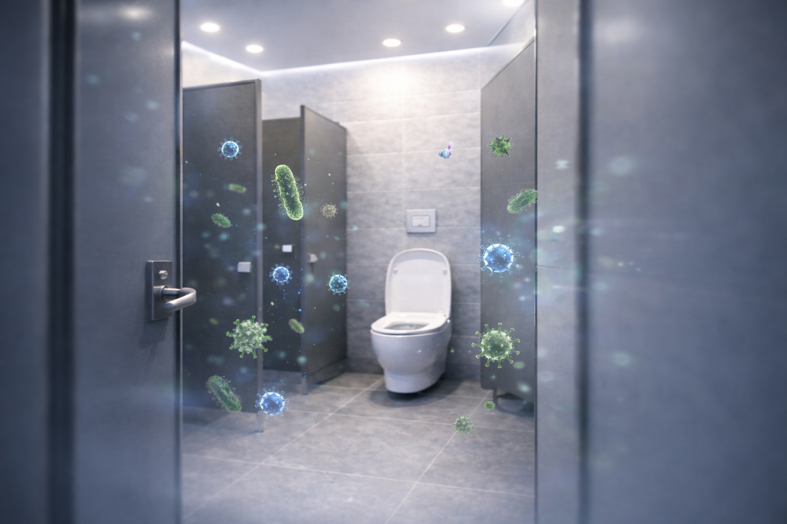
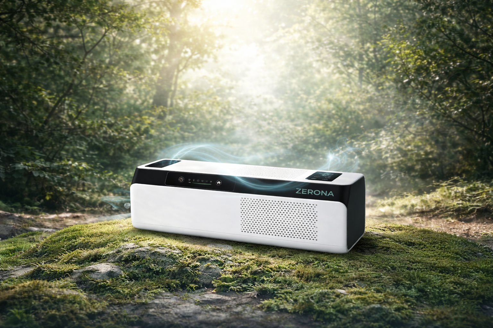

보이지 않는 위험의 정량적 증거
CU Boulder 연구 (2022)
녹색 레이저 시각화 실험 결과, 변기 물내림 직후 오염 물질이 2m/s의 속도로 수직 상승하여 8초 만에 화장실 전체로 확산됩니다.
리즈 & 애리조나 대학교 분석
에어로졸 내 병원균의 최대 60%가 90분 이상 생존하며, 이는 단순 환기만으로는 제거가 불가능함을 시사합니다.
살균 시스템 가동에 따른 농도 변화
OH 라디칼 살균기는 가동 10분 만에 부유 에어로졸 농도를 70% 이상 감소시킵니다.

광촉매 살균 기술의 정수
지구상에서 가장 안전하고 강력한 살균 원리, OH 라디칼을 확인하십시오.
홍보 영상 확인 (video.mp4)
01
DNA 완전 파괴
바이러스 외벽의 수소 결합을 제거하여 즉각적인 사멸 유도
02
잔류물 제로
반응 후 인체에 무해한 소량의 물(H2O)로 환원되어 상시 가동 가능
03
반영구적 광촉매
소모성 필터 교체 없이 빛을 이용한 지속적인 정화 성능 유지
타 살균 방식 대비 우수성

주요 도입처
-
●
학교 시설: 면역력이 약한 학생들의 단체 급식소 및 교내 화장실 방역
-
●
공공 휴게소: 고속도로 휴게소 등 불특정 다수 밀집 구역의 고질적 악취 및 세균 관리
안전한 공간을 위한 첫 걸음
모든 데이터는 글로벌 연구 결과 및 자사 테스트 수치를 기반으로 작성되었습니다.